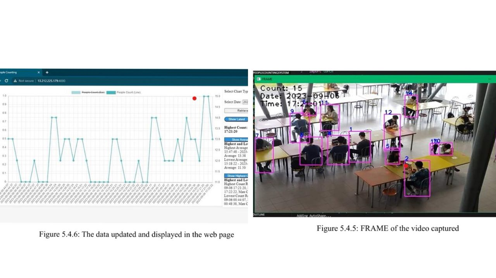
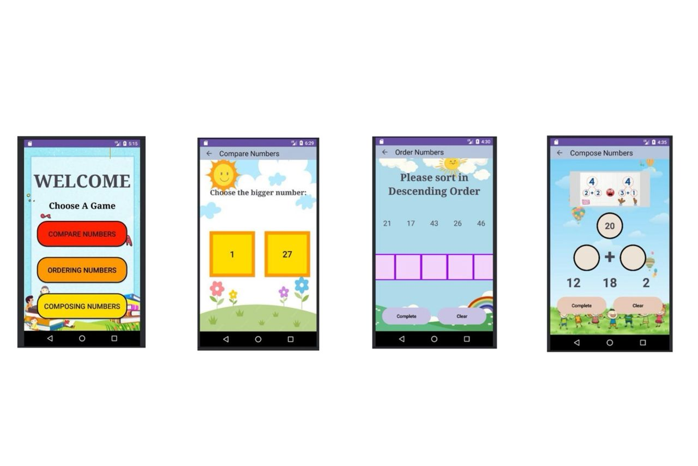

Hello, I'm
A self-motivated IT professional with nearly one year of hands-on experience in software development. I hold a Bachelor’s Degree in Computer Science and have gained practical experience working on real-world projects. I am eager to continue growing my technical skills and contribute effectively in a dynamic team environment.
Career Path
Autobahn Rent A Car Pte Ltd
Software Engineer
Axel Logic Sdn Bhd
Software Developer Intern
What I've Built
Batik Creator Application
This Final Year Project develops a Batik Creator mobile application that integrates generative AI to enhance digital fashion design. The system allows users to randomly generate batik patterns, customize the designs by editing colors or shapes, and apply the batik pattern onto different clothing fabrics through a batik cloth transfer feature. Users can then visualize how the selected clothing would look when worn on a model using a GAN-based virtual try-on model (VITON-HD). By combining batik pattern generation, customization, and virtual try-on, the application provides an interactive platform for exploring and designing personalized batik clothing digitally.
Screenshots
Scroll to see more

Project 02
A computer vision–based system that detects and counts café visitors using YOLOv5. The system processes video input to identify people and records the visitor count automatically. The data is sent to a cloud server and stored in a database, where it is visualized through graphs on a web interface for real-time monitoring and analysis. This helps café owners understand customer traffic patterns and optimize staffing and operations.

Project 03
A mobile math learning application for kindergarten students that helps them practice number concepts through interactive mini-games. The app includes modules for comparing numbers, ordering numbers, and composing numbers, with randomly generated questions and instant answer feedback. Developed using Android Studio (Java) with a child-friendly UI design to make learning mathematics more engaging and accessible. 📱